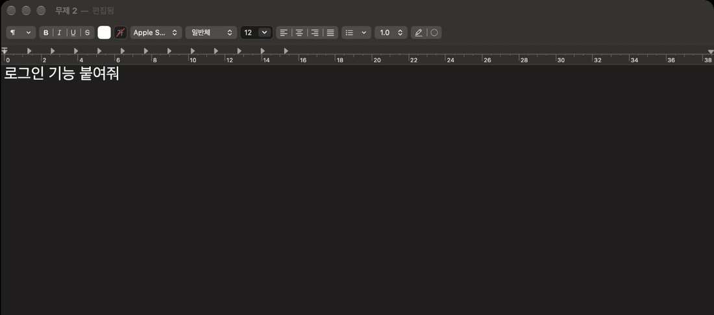
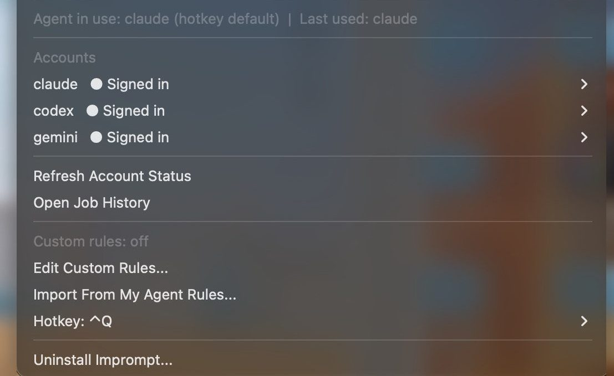

대충 쓴 요청을
지시문으로 바꿉니다
아무 앱에서 문장을 선택하고 Ctrl+Q. 10~30초 뒤 그 자리에서 교체됩니다.
요구사항 착수 전에 코드에서 해당 기능이 있는 위치를 찾아 그 구조를 따를 것 외 3개
완료 기준 올바른 자격 증명으로 로그인되고 새로고침 후에도 상태가 유지되며, 잘못된 자격 증명은 거부된다
가정 인증 방식: 기존 방식이 없으면 이메일+비밀번호, 서버 세션(쿠키) 기반
https://github.com/seonoh/Imprompt/blob/main/llms-install.md 이거 사용할 수 있게 작업 진행해
설치: Claude Code, Codex, Gemini CLI에 이 문장을 보냅니다. macOS와 Windows(Linux도 됨 — 단축키는 데스크톱 설정에서 한 번 연결). 에이전트가 없다면 설치 파일·명령 한 줄.
선택한 자리에서 바뀝니다
복사하거나 창을 옮길 필요가 없습니다. 정해지지 않은 사항은 권장안으로 확정해 되묻지 않습니다.

기능별 전과 후
내가 쓰는 Claude, ChatGPT, Gemini 구독으로 동작합니다. 추가 요금과 API 키는 없습니다.
-
아무 앱에서 Ctrl+Q
어떤 앱에서 쓴 요청이든 목표, 요구사항, 제약, 완료 기준을 갖춘 지시문이 됩니다. 정해지지 않은 사항은 권장안으로 확정해 되묻지 않습니다.
전로그인 기능 붙여줘
후목표 1줄, 요구사항 4개, 제약 2개, 완료 기준 2개, 권장안으로 확정한 가정 2개
-
보내기 전에 묻는 질문
Claude Code 입력창(macOS·Linux)에서는 빠진 결정을 먼저 묻고, 답을 확정 사실로 넣습니다.
전대상이 정해지지 않은 채 전송됩니다
후로그인을 붙일 앱·모듈은 어디인가요? 같은 질문 최대 3개에 번호로 답합니다. 60초 동안 답이 없으면 권장안으로 진행합니다
-
CLI 안에서 바로 개선
에이전트 대화를 벗어나지 않고 개선본을 받습니다. 같은 요청은 24시간 동안 다시 호출하지 않습니다.
전다른 창에서 다듬은 문장을 복사해 붙여넣습니다
후
improve_prompt로 개선해줘: 로그인 붙여줘 -
내 선호 한 번 등록
답변 언어, 출력 형식, 검증 습관, 금지 사항을 한 번 적으면 Ctrl+Q, 입력창, MCP 개선본에 모두 반영됩니다.
전요청할 때마다 같은 조건을 덧붙입니다
후Edit Custom Rules에 한 번 저장합니다. 기존 CLAUDE.md, AGENTS.md, GEMINI.md에서 가져올 수도 있습니다

입력하고 Ctrl+Q. 끝
- 단축키 바꾸기
- Hotkey. Ctrl+Q를 쓰는 앱이 있으면 다른 키로 바꿉니다.
- 로그인 상태
- Accounts(Windows는 Sign in...). 엔진별 로그인 상태를 보고 바로 로그인합니다.
- 지우기
- Uninstall Imprompt.
설치는 문장 하나
AI 에이전트가 설치, 설정, 동작 확인까지 진행합니다. macOS는 처음 한 번 Hammerspoon 권한 스위치를 켭니다.
https://github.com/seonoh/Imprompt/blob/main/llms-install.md 이거 사용할 수 있게 작업 진행해